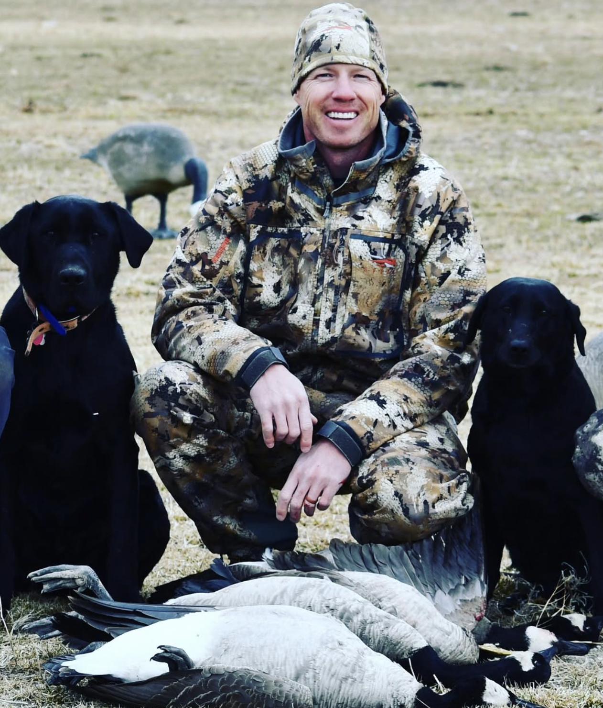

Episode 1 · April 26, 2023 · 1733
Introducing The Bird Dog Podcast and Host Tyce Erickson

About This Episode
Tyce Erickson is the owner and host of The Bird Dog Podcast. In this podcast he introduces himself and talks about some of his past bird dogs, how he got started and the 2022 bird hunting season
Questions about the training topics in this episode? Tyce works with bird dog owners and hunters through Utah Bird Dog Training. Reach out to work with him directly.
Resources & Links
- Utah Bird Dog Training — Work directly with Tyce — professional bird dog training services in Utah.
Transcript
Full transcript for Episode 1: Introducing The Bird Dog Podcast and Host Tyce Erickson.
Tyce
Hey everyone, welcome to the Bird Dog Podcast. My name is Tyce Erickson. I am the owner of Utah Bird Dog Training here in Utah, and this is the first episode of what I hope becomes a resource you come back to again and again if you love bird dogs, hunting, and the outdoor life that goes with them.
Quick background on me. I've been training dogs professionally for close to 20 years. I specialize in pointing dogs, retrievers, and versatile hunting breeds — Labs, Golden Retrievers, pointing Labs, German shorthairs, and more. I've worked with thousands of dogs and the owners who hunt them, and that experience has given me a pretty broad view of what works, what doesn't, and what questions come up over and over again. My wife Rachel and I raise field-bred Golden Retrievers and a small number of pointing Lab litters each year, and we're raising five kids in Utah in a house where dogs and hunting are just part of daily life.
I'm an avid hunter myself — waterfowl, upland birds, big game. I love the whole thing. But bird dogs are where my heart is. There's something about the relationship between a hunter and a well-trained dog that I don't think any other part of hunting can match. You build that animal from a puppy, put years of work into it, and then watch it do exactly what it was bred to do in the field. That's special.
The reason I started this podcast is simple: I have conversations every day with clients, trainers, breeders, hunters, and industry people that I want more people to hear. I ask a lot of questions. I'm always learning. And I figured if these conversations are making me better, they can probably do the same for you. The plan is to mix solo episodes where I dig into training topics with interviews with people who know something worth sharing — hunters, trainers, vets, breeders, product people, and just good dogs folks who have been at this a long time. If you love bird dogs and hunting, this is for you. Thanks for listening and I'll see you in the next one.
About the Host
Tyce Erickson
Tyce Erickson is a professional bird dog trainer and the owner of Utah Bird Dog Training in Utah. For nearly two decades he has worked with pointing dogs, retrievers, and family hunting dogs — helping owners build dogs that are capable and enjoyable in the field. The Bird Dog Podcast is an extension of that work: honest conversations on training, hunting, breeding, and everything that goes into a life spent working dogs.
More About Tyce